Front-End
HTML5
CSS3
 ---O que me move não é o que já existe, --
é o que ainda posso criar.
HTML5
CSS3
Python
Java
Me chamo Luiz Miguel Poleti Amaro, sou estudante de Tecnologia da informação no IFPR. Atuo em projetos de robótica e me destaco pela resiliência, força de vontade e foco em construir resultados consistentes.